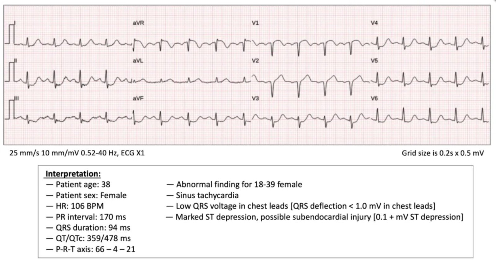
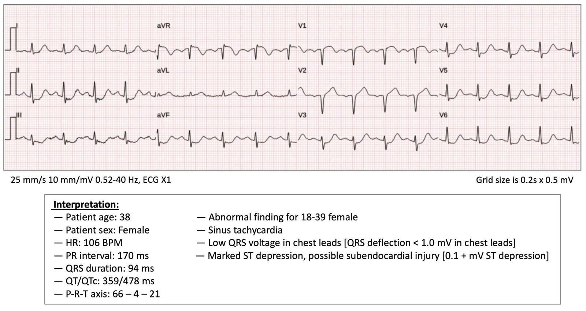
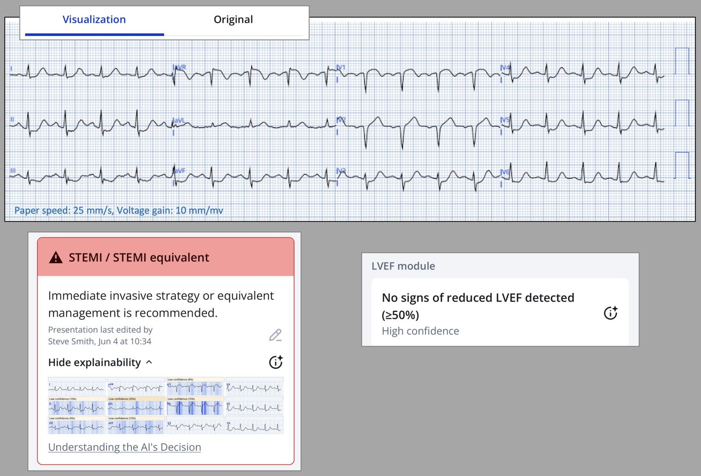
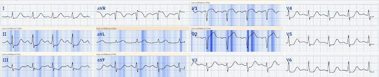
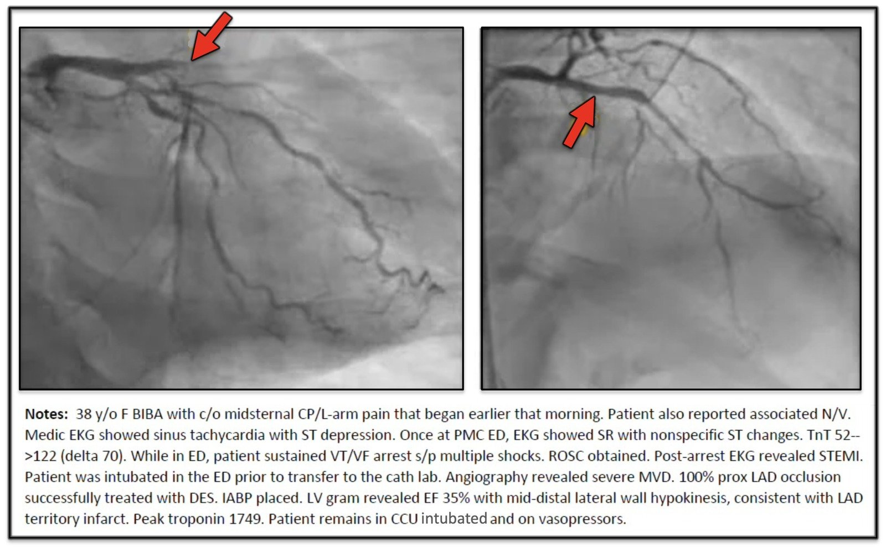
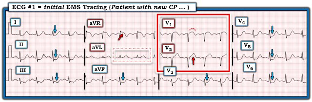

05/06/2025 — Khi có điện tâm đồ này, điều tồi tệ nhất là bạn lại là một phụ nữ trẻ
Bản dịch tiếng Việt của bài "The worst thing you can be when you have this ECG is to be a young woman" – Dr. Smith’s ECG Blog. Giữ nguyên toàn bộ 5 hình ảnh của bản gốc.


Ca này do một nhân viên cấp cứu ngoài viện xuất sắc, Drew Williams, đóng góp. Hiện anh là “Chuyên viên phân tích cải tiến lâm sàng về hiệu quả xử trí STEMI và đảm bảo chất lượng” của đơn vị mình.
Một phụ nữ 30 mấy tuổi gọi 911 vì đau ngực. Nhân viên cấp cứu ngoài viện báo cáo như sau:
- “BN kể khởi phát từ từ cảm giác khó chịu ở thành ngực sau xương ức, kéo dài, tái tạo được (khi ấn), lan ra hai tay, được mô tả như co thắt cơ, từ lúc thức dậy sáng nay, kèm buồn nôn/nôn (N/V).
- BN có tiền sử tăng huyết áp (HTN), tuân thủ dùng thuốc, nhưng BN phủ nhận mọi cơn đau khác/chấn thương gần đây/khó thở (SOB)/mất ý thức (LOC).
- BN tỉnh, định hướng đủ x4 (AOx4), không có thiếu sót thần kinh, đồng tử đều, tròn, phản xạ ánh sáng tốt (PERRL), đường thở – hô hấp – tuần hoàn (ABC) nguyên vẹn, thở bình thường, phổi trong, mạch quay +2, da hồng/ấm/khô, điện tâm đồ 12 chuyển đạo rõ, không ghi nhận DCAPEBLTS (biến dạng, đụng dập, trầy xước, vết thủng, bỏng, rách, đau khi ấn, sưng), sinh hiệu ghi trong hồ sơ chăm sóc bệnh nhân điện tử (EPCR).
- BN được cố định an toàn lên cáng, điều trị bằng nitroglycerin (NITRO), và được theo dõi trong suốt quá trình vận chuyển, không có thay đổi gì.”
= = =
Nhân viên cấp cứu đã ghi một điện tâm đồ trước viện:


— Bạn nghĩ gì? —
= = =
Với tôi, đây là một trường hợp tắc LAD đoạn gần rõ ràng. Tuy nhiên, tôi luôn ngạc nhiên khi thấy điều hiển nhiên với tôi lại bị nhiều bác sĩ khác bỏ sót hoàn toàn.
- Có sóng T tối cấp ở V2 và aVL, ST chênh lên (STE) ở V1, và ST chênh xuống ở I, các chuyển đạo dưới và V3-V6. Điều này không bao giờ được phép bỏ sót.
- Đây là hình ảnh “xoáy” (“Swirl”) kinh điển, mà chúng tôi lần đầu tiên mô tả trong một công bố gần đây trên Journal of Electrocardiology.
- “Khi được định nghĩa là QRS hẹp cộng với ST chênh xuống (STD) ở V5/V6 cộng với tỷ số biên độ sóng T trên sóng S > 0.40 ở V2, hình ảnh xoáy trước tim (precordial swirl) có PPV 70 %, độ nhạy 9 %, độ đặc hiệu 98 %. Trong 23 bệnh nhân nhồi máu cơ tim do tắc được dấu hiệu xoáy trước tim nhận diện đúng, 19 (83 %) có tổn thương thủ phạm ở LAD, và 16 (70 %) bị tiêu chuẩn STEMI bỏ sót.”
= = =
Đây là kết quả đọc của mô hình AI Queen of Hearts của PMCardio:


Và đây là “bản đồ nhiệt” giải thích (heat map) (hãy để ý rằng cô ấy thấy sóng T tối cấp ở V2 và ST chênh xuống ở thành dưới.


Thú vị là cô ấy không làm nổi bật ST chênh xuống ở V3-V6 …
- Ứng dụng mới PMcardio for Individuals App 3.0 nay đã có mô hình Queen of Hearts mới nhất và khả năng giải thích của AI (bản đồ nhiệt màu xanh)! Tải ngay cho iOS hoặc Android.
= = =
Nhân viên cấp cứu ngoài viện và các bác sĩ ở khoa cấp cứu (ED) đều không nhận ra điều đó.
- Tôi không có điện tâm đồ nào ở khoa cấp cứu. Nhưng nhiều khả năng mọi điện tâm đồ có thể đã được ghi ở khoa cấp cứu đều không bao giờ xuất hiện ST chênh lên đủ tiêu chuẩn chẩn đoán, vì điều này rất thường gặp.
- Chúng tôi có một bài báo đang in (In Press) trên Eur Ht Journal Acute Cardiovascular Care — trong đó chúng tôi chỉ ra rằng 20/53 ca tắc LAD TIMI-0 không có ST chênh lên đủ tiêu chuẩn chẩn đoán (nhưng 17 trong 20 ca này có sóng T tối cấp!). Cả một chuyên gia được làm mù (Smith) lẫn Queen đều nhận diện OMI ở 20/20 ca. KHÔNG có ca nào có sóng T tối cấp về sau xuất hiện ST chênh lên đủ tiêu chuẩn chẩn đoán. So với 33 ca đạt tiêu chuẩn STEMI (STE đủ tiêu chuẩn chẩn đoán) — các ca này có thời gian từ cửa đến bóng (door-to-balloon) dài hơn.
= = =
Ca bệnh tiếp diễn:
3 giờ sau khi đến khoa cấp cứu — bệnh nhân này ngừng tim do rung thất!
- Bệnh nhân được đưa vào phòng thông tim (cath lab):


= = =
KẾT LUẬN CA BỆNH:
Vậy là người phụ nữ 30 mấy tuổi bất hạnh này đã mất một nửa quả tim, bị ngừng tim, phải đặt bóng đối xung (balloon pump) và dùng thuốc vận mạch — tất cả chỉ vì không ai đọc được điện tâm đồ “Non-STEMI” của cô ấy, vốn là một trường hợp tắc hoàn toàn động mạch vành.
- Nếu sống sót, nhiều khả năng cô ấy sẽ bị suy tim vĩnh viễn.
= = =
Y văn:
1. Nếu bạn chưa biết về chủ đề này, hãy đọc bài báo gần đây chúng tôi viết trên JACC Advances:
- From ST-Segment Elevation MI to Occlusion MI: The New Paradigm Shift in Acute Myocardial Infarction (Từ nhồi máu cơ tim ST chênh lên đến nhồi máu cơ tim do tắc: Sự chuyển dịch mô hình mới trong nhồi máu cơ tim cấp)
- Toàn văn: https://www.jacc.org/doi/epdf/10.1016/j.jacadv.2024.101314 (bản PDF toàn văn trên JACC Advances)
2. Đây là bài báo nền tảng về Queen of Hearts:
- International evaluation of an artificial intelligence–powered electrocardiogram model detecting acute coronary occlusion myocardial infarction (Đánh giá quốc tế một mô hình điện tâm đồ vận hành bằng trí tuệ nhân tạo phát hiện nhồi máu cơ tim do tắc mạch vành cấp)
3. Hiện đã có rất nhiều dữ liệu cho thấy Queen sẽ nhận diện được gần như mọi trường hợp tắc mạch vành cấp (và nhận diện được các trường hợp giả).
= = =
Những điểm cần học:
1. Hãy dùng Queen of Hearts, nếu được phép, để giúp bạn nhận ra tắc mạch vành cấp.
2. Phụ nữ trẻ thường bị bỏ sót OMI. “Thôi, phụ nữ trẻ thì làm sao mà nhồi máu cơ tim được!”
3. Nếu không có Queen, bạn cần dành nhiều thời gian để học kỹ năng cực kỳ khó này: đọc điện tâm đồ để phát hiện OMI kín đáo.
= = =
======================================
BÌNH LUẬN CỦA TÔI, bởi KEN GRAUER, MD (5/6/2025 — Cập nhật cho WordPress ngày 6/3/2026):
Ca hôm nay sẽ gây bức xúc, không chỉ với những nhân viên y tế đã quen với khái niệm OMI cấp (nhồi máu cơ tim do tắc – Occlusion-based Myocardial Infarction) — mà cả với những người mới chỉ được đào tạo những điều cơ bản về đọc điện tâm đồ để đánh giá bệnh nhân CP mới (đau ngực – Chest Pain). Loại ca này không được phép bỏ sót.
- CA BỆNH hôm nay: Nhân viên cấp cứu ngoài viện được gọi đến hiện trường, nơi một phụ nữ 30 mấy tuổi kể bị CP mới kéo dài từ lúc thức dậy buổi sáng. Bất kể tuổi còn khá trẻ của bệnh nhân — bệnh sử CP mới và kéo dài, đủ nặng để phải gọi 911 — tự động xếp bệnh nhân này vào nhóm nguy cơ cao hơn có một biến cố cấp.
- Bệnh sử như trong ca hôm nay — theo định nghĩa phải có nghĩa là vai trò của đội cấp cứu ngoài viện (EMS) và các bác sĩ khoa cấp cứu là loại trừ một biến cố cấp ( chứ không phải ngược lại).
= = =
Để cho rõ, trong Hình 1 — tôi đã sao lại và đánh dấu điện tâm đồ EMS ban đầu.
- Chưa cần đi vào những dấu hiệu nâng cao hơn của chẩn đoán điện tâm đồ cụ thể ở Hình 1 — những điều cơ bản mà ngay cả những nhân viên cấp cứu ít kinh nghiệm hơn cũng phải nhận ra là: i) QRS hẹp và nhịp ở Hình 1 là nhịp xoang (sóng P dương với khoảng PR hằng định và bình thường ở chuyển đạo II ); — và, ii) Có ST chênh xuống ở nhiều chuyển đạo (tức là, ở 8 chuyển đạo được đánh dấu bằng mũi tên XANH trong Hình 1).
- Bất kể người ta theo tiêu chuẩn ST chênh lên dựa trên milimét một cách chặt chẽ ( = mô hình STEMI) — hay — đã tiếp nhận khối y văn ngày càng lớn mà chúng tôi liên tục ghi lại để ủng hộ mô hình OMI mới hơn và toàn diện hơn (Xem các TAB OMI Literature Timeline và OMI Facts and References trong mục “Research & Resources” ở MENU phía trên cùng của mọi trang trong Dr. Smith’s ECG Blog) — sự kết hợp của đau ngực mới và kéo dài (CP), đủ nặng để phải báo 911 — và đặc biệt là điện tâm đồ hôm nay cho thấy ST chênh xuống ở nhiều chuyển đạo — cần khởi động một quy trình đánh giá khẩn trương dẫn tới chụp mạch vành kịp thời trước khi xảy ra cơn rung thất mà bệnh nhân này đã gặp vì những khái niệm cơ bản này không được nhận ra.
= = =
Xem kỹ hơn điện tâm đồ #1:
Như phần bàn luận của Dr. Smith ở trên — điện tâm đồ #1 là một trường hợp OMI LAD đoạn gần cấp rõ ràng. “Con mắt” của chúng ta phải bị thu hút ngay lập tức bởi chuyển đạo V1 và V2 (trong hình chữ nhật ĐỎ):
- Ở bệnh nhân CP mới — chính “khối lượng” tăng không tương xứng của sóng ST-T ở chuyển đạo V2 (so với sóng S tương đối nhỏ ở chuyển đạo này) cho thấy tính tối cấp.
- Ở bệnh nhân có QRS hẹp và không LVH — sóng ST-T ở chuyển đạo V1 không bao giờ được dương nhiều hơn mức tối thiểu (nếu có). Thay vào đó, đặc biệt trong bối cảnh sóng ST-T không tương xứng ở chuyển đạo V2 — ST dạng vòm (coving) và chênh lên mà ta thấy ở chuyển đạo V1 trong Hình 1 cũng là một thay đổi tối cấp ngang với sóng ST-T “đồ sộ” quá mức ở V2.
- Chúng tôi đã nhiều lần nhấn mạnh khái niệm “xoáy” trước tim (Precordial Swirl) trên Dr. Smith’s ECG Blog (Xem bài ngày 15 tháng Mười năm 2022 — với 20 điện tâm đồ minh họa của Dr. Smith và Dr. Meyers — cùng “Quan điểm của tôi” (My Take) ở cuối trang với một số điểm then chốt (pearl) giúp nhận ra nhanh một hình ảnh “xoáy” ).
- Điện tâm đồ #1 khớp hoàn hảo với mô tả “xoáy” trong bài ngày 15 tháng Mười năm 2022 này vì: i) Ở bệnh nhân CP mới, QRS hẹp và không có LVH trên điện tâm đồ này — sóng ST-T ở chuyển đạo V1,V2 rõ ràng là tối cấp;— và, ii) Có ST chênh xuống dẹt ở chuyển đạo V5,V6.
= = =
Các dấu hiệu điện tâm đồ khác trong Hình 1 gồm:
- Nhịp nhanh xoang (khoảng ~105-110 lần/phút) — điều bất thường trong một nhồi máu cơ tim đơn thuần trừ khi có điều gì khác đang diễn ra (tức là, nhồi máu lan rộng trong ca này — ngay sau đó đã tiến triển thành rung thất (VFib)).
- Một sóng T tối cấp ở chuyển đạo aVL (điều này củng cố cho các sóng ST-T tối cấp mà ta thấy ở V1,V2 — như dấu chỉ vị trí đoạn gần của LAD cho động mạch “thủ phạm” này).
- ST chênh lên ở chuyển đạo aVR — điều này, khi đi kèm với hình ảnh “xoáy” trước tim có ST chênh xuống ở 8/12 chuyển đạo, gợi ý hoặc bệnh nhiều nhánh mạch vành và/hoặc một nhồi máu lan rộng đang diễn ra.
= = =
Hình 1: Tôi đã sao lại và đánh dấu điện tâm đồ EMS ban đầu của ca hôm nay.


= = =
= = =